به تارنمای محصولات آرد و نان بومی سورمنده خوش آمدید.



درباره سورمنده
کارخانه سورمنده توسط شرکت طبیعت طعم غلات در سال ۱۳۹۶ در شهرک صنعتی دهسرخ تاسیس شده است.
علت نامگذاری نام سورمنده، دشتهای گندم، جو و چندغله منطقه سورمنده در شهر اصفهان می باشد. غله تولیدی این منطقه از فراوانی و کیفیت بسیار بالایی برخوردار است؛ بهگونهای که آرد و نان فرآوری شده از آن، کیفیتی متمایز دارد.
آرد کامل گندم، آرد کامل جو، آرد چند غله، عمده محصولات این کارخانه میباشند.
بهکارگیری تجهیزات و ماشینآلات مدرن یکی از مزیتهای اساسی این کارخانه می باشد که موجب شده است فرآیندهای مختلف تولیدی، تمیز و بهسرعت انجام شوند.
آرد کامل گندم
مناسب پخت انواع بیسکوئیت، کلوچه، حلوا، سمنو و نان سبوس دار
گندم یکی از اولین و گستردهترین محصولات کشاورزی است که به عنوان منبع اصلی تامین کالری و پروتئین انسان در کشورهای مختلف به خصوص در کشورهای در حال توسعه شناخته شده است.
ارزش غذایی بالا، هضم آسان، تنوع و مرغوبیت فراوردههای آن، سهولت تبدیل و نگهداری، آن را در بین سایر غلات متمایز کرده است. دانه
گندم شامل سه قسمت اصلی اندوسپرم، جوانه و سبوس میباشد. جوانه از نظر رویش مجدد دانه گندم نقش مهمی دارد، پوسته دارای لایههای متعددی است که ترکیب شیمیایی و ارزش تغذیهای آنها متفاوت است. مغز دانه نیز محتوی نشاسته است که به علت متفاوت بودن ترکیبات قسمتهای مختلف آن کاربردهای صنعتی و تغذیهای گوناگونی دارد.
-
مزایای استفاده:
- کاهش کلسترول مضر خون
- کاهش سرعت جذب قند و کاهش ابتلا به دیابت
- سرشار از فیبر و ایده آل برای رژیمهای غذایی و سلامت دستگاهگوارش
- حاوی عناصر معدنی و ویتامین های B
آرد کامل جو
مناسب پخت انواع بیسکوئیت، کلوچه و نـــــان سبــــــــــوس دار
گیاه جو از اولین غلههایی است که انسان کشت میکرده و تا چند صد سال پیش غله منحصر به فرد شمرده می¬شد که بعدها گندم جایگزین آن شد. گیاه جو در ایران دومین غله پس از گندم است که تقریبا از نظر تولیدی در رده چهاردهم دنیا قرار دارد. خاستگاه واقعی جو هنوز ناشناخته است. اما بسیاری از محققین، خاستگاه این گیاه را کوههای زاگرس در غرب ایران، آناتولی جنوبی و فلسطین میدانند.
- مزایای استفاده:
- تسهیل هضم و متعادل سازی باکتری های مفید در دستگاه گوارش
- کمک به کاهش وزن و محدود سازی میل به غذا
- کاهش ریسک ابتلا به سنگ کلیه
- افزایش الاستیسیته پوست و محافظت از آن در مقابل رادیکالهای آزاد
- کاهش تحریک پذیری ریه در بیماری آسم
- کاهش ریسک بیماری های قلبی- عروقی
- منبعی مناسب از آنتی اکسیدان، مواد معدنی و ویتامین های ضروری
- کمک به کنترل بیماری دیابت نوع دو و دیابت بارداری
- تقویت سیستم ایمنی بدن (حاوی بتا گلوکان)
نشانی کارخانه: اصفهان، ناحیه صنعتی دهسرخ (مهرگان)، خیابان هشتم، پلاک 72، شرکت طبیعتطعمغلات
شمارههای تماس:
1919 3030 091،
6363 3030 091،
7575 3030 091
تمامی حقوق مادی و معنوی برای شرکت طبیعت طعم غلات محفوظ میباشد.